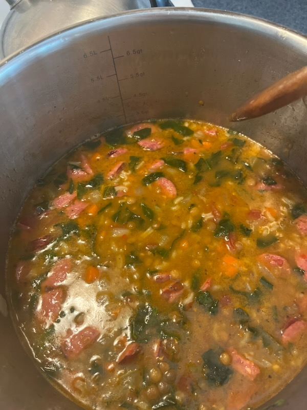

Back
Lentil Soup

Description
This preparation makes a lentil and vegetable soup, which is served with spinach and smoked sausage.
It is easy to prepare, and requires little overt attention once the cooking is begun in earnest, though it may take some effort to keep all preparations in time with the cooking.
Ingredients
- 1/4 cup long-grain rice
- 6 cups chicken or vegetable stock
- 2 cups of water
- 1 & 1/2 cups lentils
- 1 large chopped onion
- 2 chopped celery stalks
- 1-3 chopped carrots, depending on size
- 1 can diced tomatoes with liquid
- 8 cups chopped spinach
- (Optional) Smoked link sausage, 4 links
- 1/2 cup parmesan cheese
Steps
- Chop all vegetables, add to stockpot with oil and cook on medium for five minutes
- Add lentils and continue cooking for an addtional five minutes
- Add stock and water, bring to boil and simmer 45 minutes, stirring occasionally
- Add can tomatoes, return to simmer 40 minutes.
- While soup simmers, chop all spinach and set aside
- Halve sausages and cut into inch-thick half moons
- Brown sausages over medium heat
- Add spinach and sausages to soup, mix thoroughly
- Add half cup of parmesan, and serve
- (Optional) Serve over pasta or rice